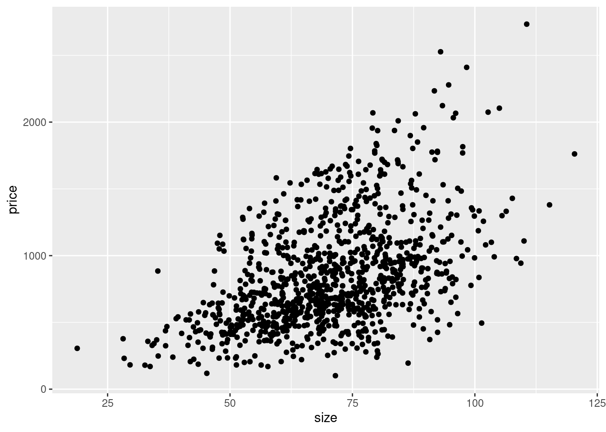
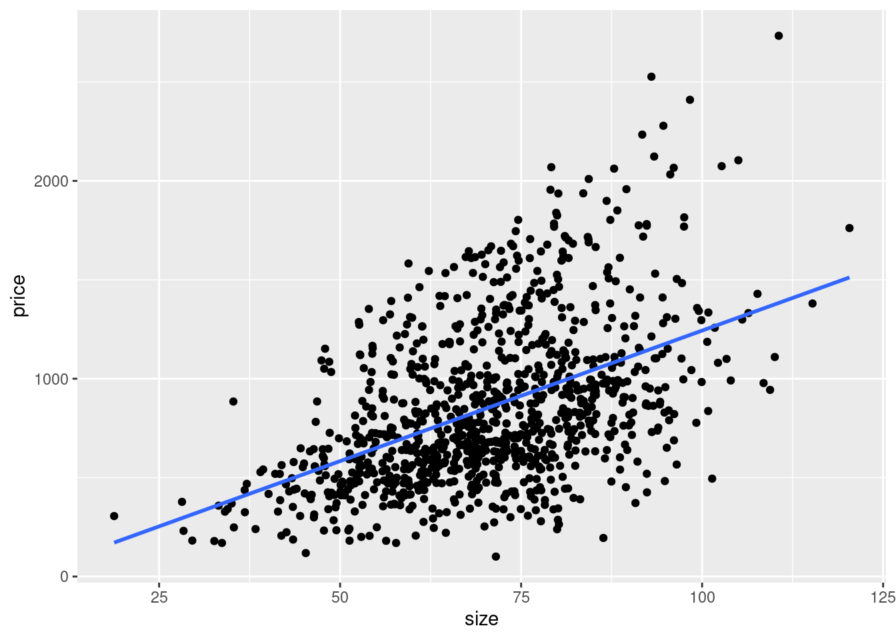

12 Graphical analysis with ggplot
Since we have cleaned our example data in the last chapter, we will now apply some graphical analysis to it, using the ggplot2 package.
To follow most of the examples, we need the object reports_fyears from chapter
11. Either you can re-run the relevant code blocks from the last
chapter, or the condensed block below. We also will need to load the tidyverse
package – which includes ggplot2 – and lubridate.
library(tidyverse)
library(lubridate)load("reports.RData")
reports_fyears <- reports %>%
mutate(District = substr(District, 14, length(District))) %>%
mutate(date_cmpl = dmy_hm(Date)) %>%
mutate(year = year(date_cmpl)) %>%
mutate(month = month(date_cmpl, label = TRUE)) %>%
mutate(day = wday(date_cmpl, label = TRUE)) %>%
mutate(time =
substr(Date, 12, length(Date)) %>%
hm()
) %>%
select(-c(Date, Report)) %>%
rename(district = District) %>%
filter(year %in% 2015:2020) %>%
mutate(district = str_remove_all(district, pattern = " "))12.1 ggplot2 syntax
The basic principle of ggplot2 is that we initiate an empty plot using
ggplot() – note that while the package is called ggplot2, the function is
written without the “2” – and then add one or multiple geoms, the graphical
elements that shall be plotted – e.g. points, lines, bars and so on. We will
look at some practical examples of geoms soon.
ggplot() has to be provided the name of the object that contains the data we
want to plot as its first argument.
ggplot(data = reports_fyears)
As you can see in the “Plots” tab located in the lower right of RStudio, a plot
was created but it is still empty because we have not added any geoms yet; we
can do this by writing a + after ggplot() and adding the geom in a new line.
Additional geoms can be added in the same manner. So the basic syntax, this is
not runnable code, looks like this:
ggplot(data = ...) +
geom_1() +
geom_2() +
...12.2 Geoms and aesthetics
Geoms represent the graphical objects we actually want to plot. All geom
functions start with geom_ and end in a word describing the type of geom, e.g.
geom_point() for scatter plots, geom_line() for lines or geom_col() for
bar plots. To get an overview of the available geoms, I highly recommend the R
cheat sheet for ggplot2, accessible here:
https://raw.githubusercontent.com/rstudio/cheatsheets/master/data-visualization-2.1.pdf
The aesthetics of a geom are used to assign the x and y variables that will be plotted on the coordinate system. Additionally, aesthetics can be used to influence the visual display of the plotted elements by the value of a variable, e.g. the colour of points or the thickness of a line. We will look at examples that show this later, and we will first focus on assigning variables to both axes, as these are the only aesthetics that have to be provided, everything else being optional.
To define the aesthetics we use aes() as an argument of the geom function and
assign variables to the horizontal x-axis and vertical y-axis of the plot, as
shown below. Once more, the code block is used for illustration only and will
not run.
ggplot(data = ...) +
geom_1(aes(x = x_variable, y = y_variable)) +
geom_2(aes(x = x_variable, y = y_variable)) +
...If we are using the same x and y variables for all geoms, we can define them
directly in the call of ggplot().
ggplot(data = ..., aes(x = x_variable, y = y_variable)) +
geom_1() +
geom_2() +
...12.2.1 Continuous x, continuous y
Variables are only continuous, when they are able to take on every value – maybe limited by a maximum and minimum; they are also always numerical. Examples that are frequently used in the social sciences are income or monetary values in general, if they are measured accurately and not in a number of broad categories. The latter would be an example of a categorical variable, as the variable can only take on a number of defined categories. Income groups would be an example for this, as would be gender or the party that has been voted for in the last election.
In our example data, we mostly find categorical variables like district or
day, while date_cmpl and time are continuous variables. Because all of the
continuous variables are referring to the same concept – the moment in time
when the report occurred – it makes no sense plotting them against each other.
For this reason and because plots for continuous by continuous variables are
important types of plots, we will construct a simple example dataset using
random values.
Let us create fictional data for the size and the price of apartments in a city.
Let us assume, that the mean value for size in square meters is \(70\) and the
mean value for the price in Euro per square meter is \(10\). The actual values
should be evenly distributed around those means. There should also be about
\(20\)% of premium apartments, that for some reason – maybe they are in an
exceptionally expensive district – cost \(10\) Euros more per square meter. The
following code block – which can not be explained in detail here – will
generate the data just described. set.seed() assures that you will get the
same random number generator results every time.
set.seed(08072021)
rent <- tibble(
size = rnorm(1000, mean = 70, sd = 15),
premium = as.logical(rbinom(n = 1000, size = 1, prob = 0.2)),
price = size * (10 + rnorm(1000, mean = 0, sd = 3) + (10 * premium))
)
rent %>%
head(n = 5)
## # A tibble: 5 × 3
## size premium price
## <dbl> <lgl> <dbl>
## 1 61.6 FALSE 999.
## 2 61.4 FALSE 506.
## 3 69.3 FALSE 504.
## 4 56.4 FALSE 604.
## 5 72.0 FALSE 682.We can now plot this data. The price of an apartment depends on its size, thus
price should be plotted on the y-axis which is usually used for the dependent
variable and the independent variable size on the x-axis. Our assumption –
and we know it is true as we created the data this way – is that the size of an
apartment explains its price. We will use the geom_point() to build a
scatterplot, with each point representing one of the 1000s of combinations of
size and price in the data.
ggplot(data = rent, aes(x = size, y = price)) +
geom_point()
Looking at the data points, we clearly see a relationship. Overall, the bigger
an apartment is, the higher is its price point. We know this is true in our data
and the relationship is very clearly visible, but we can confirm this assumption
by also plotting a regression line over the points. This will visualise the
linear relationship between both variables in the way that best fits the data
using a straight line. We can use geom_smooth() for this purpose, specifying
that we want to use method = 'lm', which is a linear model. The second option
se = FALSE means that we do not want to plot the confidence intervals around
the regression line, which is a measure of the uncertainty of the estimated
relationship.
ggplot(data = rent, aes(x = size, y = price)) +
geom_point() +
geom_smooth(method = 'lm', se = FALSE)
## `geom_smooth()` using formula 'y ~ x'
The angle of the regression line shows us the correlation between size and
price. Also we can use it to estimate the mean value of y for every given x.
An apartment of 50 square meters in average costs about 600 Euros, for example.
Remember that we added a third variable to the dataset, indicating whether it is
a premium apartment or not, by using a logical variable. We can use this as an
aesthetic to group the data in the plot by its values and in this way generate
different regression lines per group using the aesthetic group = premium or we
can use colour = premium to simultaneously group the data and colour the
plotted objects by their group membership.
ggplot(data = rent, aes(x = size, y = price, colour = premium)) +
geom_point() +
geom_smooth(method = 'lm', se = FALSE)
## `geom_smooth()` using formula 'y ~ x'We see clearly now, that the steepness of both lines differs. For premium apartments the correlation between square meters and price is stronger than for non-premium apartments.
Sidenote: Here the relationship between the three variables was known beforehand, as we have designed the data in this way. With real data, we would not know the relationship. Based on theoretical considerations we can assume a correlation between two variables and assess its presence in our actual data visually using a plot of this kind.
12.2.2 Graphical analysis of Berlin police reports
We will now return to our scraped data on police reports in Berlin and follow up the summary statistics with additional graphical analysis, broadening our view on the patterns in the data.
12.2.2.1 Categorical x variables
In the last chapter we saw that there seems to be a rise of police reports
during the week, culminating on Fridays. If we want to visualise the number of
police reports per day, one common approach is to use a bar plot.
geom_bar()just needs to be supplied with the variable holding the categories
– here day – and will then count the number of occurrences of the category
which are plotted as bars with corresponding height.
ggplot(data = reports_fyears, aes(x = day)) +
geom_bar()We see that there is an increase over the course of the week, but that the relative differences between the days are minor. Combined with the summary statistics for the number of reports by year and month seen in chapter 11, we can conclude that there seem to be no systematic differences in the count of police reports by weekday, month or year it occurred. As we have established, we do not know how the data is created. That the number of reports is rather constant over time could point towards a quota of reports that are released by the Berlin police per day, not depending on whether much of interest happened on a specific day.
Let us plot the report counts by the district, using the same approach. Let us plot the categories on the y-axis to make the long district names more readable.
ggplot(data = reports_fyears, aes(y = district)) +
geom_bar()This is nice, but it would be easier to interpret, if the bars were ordered by
their height. We also have the category “NA” which has no meaning that we could
interpret and should be removed before plotting. drop_na() will remove all
observations for which the value of a specified variable is NA. We then group
by district and calculate the group counts using summarize() with n(), as
we have already done in chapter 11. The result is passed to ggplot()
through the pipe. Here we use geom_col() which basically is a bar plot where
the occurrences of each category are not counted automatically but are already
present as a number in the data set. In our case we have summarised the number
of reports in the column reports which is assigned to the x-axis in our plot.
The y-axis variable is arranged in descending order using reorder(); the
function sorts the variable that is specified in the first argument by using the
values of the variable defined in the second argument. In this case ordering the
categories of district by the values of reports.
reports_fyears %>%
drop_na(district) %>%
group_by(district) %>%
summarize(reports = n()) %>%
ggplot(aes(x = reports, y = reorder(district, reports))) +
geom_col()The plot underlines what we have already seen in chapter 11, that some districts, especially “Mitte”, are referred to by considerably more police reports than others.
12.2.2.2 Continuous x variables
The time of day when a report occurred is a continuous variable; it can take all
values between 00:00 and 23:59. If we want to visualise how its values are
distributed across this range, we can plot a histogram. In a histogram the range
of a variable is divided into bins; bins being an interval in the data. If we
have 30 bins, which is the standard in geom_histogram(), the data is divided
into 30 intervals of the same length. For each interval the number of actual
values that fall into it is counted and displayed on the y-axis, which is
therefore represented by the height of the bar. To be able to plot the values of
time, we again have to convert the representation in hours, minutes and
seconds to its numerical values – being the number of seconds since midnight –
by using as.numeric() or period_to_seconds() (also see chapter
11).
ggplot(data = reports_fyears, aes(x = period_to_seconds(time))) +
geom_histogram()
## `stat_bin()` using `bins = 30`. Pick better value with `binwidth`.We immediately see that the number of reports is not evenly distributed
throughout the day. It is also not normally distributed, as the distribution is
right-skewed, with high counts for low to medium values of time and lower
counts for higher values that are spread out far to the right. We also see that
there is a period on the left- and on the right-hand side of time where the
counts are \(0\), meaning no reports are filed in the very early and very late
hours.
But the plot remains hard to interpret because the value labels that are shown on the x-axis do not immediately make sense to us. What is the time in hours and minutes when \(25000\) seconds have passed since midnight? As most humans – including myself – will not have an immediate answer to this question, our graphic is communicating the wrong measurement.
We can use scale_x_continuous() to set options for the display of the x-axis,
in this case to choose more appropriate labels. The argument breaks
determines at which values the axis should be labelled; with labels we can
further specify what the labels will be display. In the next code block, the
values supplied to breaks are calculations of the seconds that since midnight
for the hours of the day I chose, and for labels character strings using the
familiar display of hours and minutes.
While we are at it, we can tune the graphical output some more: with labs() we
can set labels for several parts of the graphic. Here we display nice and clear
labels on both axis – instead of using the name of the variables – and a title
for the graphic. In chapter 11 we calculated the mean time of day over
all police reports filed. We can include this in the plot by adding a vertical
line using geom_vline(); with the aesthetic xintercept specifying the
x-value at which we want to draw the line, in this case the mean we calculated
and assigned to an object. We also use the colour argument outside of aes()
to set a constant colour for the line – instead of using it as an aesthetic and
thus colouring the data by the values of a third variable.
Sidenote: For an overview of the available colours, have a look at: http://www.stat.columbia.edu/~tzheng/files/Rcolor.pdf.
mean_time <- reports_fyears$time %>%
period_to_seconds() %>%
mean()
ggplot(data = reports_fyears, aes(x = period_to_seconds(time))) +
geom_histogram() +
scale_x_continuous(breaks = c(6 * 60 * 60, 9 * 60 * 60, 12 * 60 * 60,
15 * 60 * 60, 18 * 60 * 60),
labels = c("6:00", "9:00", "12:00", "15:00", "18:00")
) +
labs(x = "Time of Day",
y = "Reports",
title = "Distribution of police reports over time of day") +
geom_vline(aes(xintercept = mean_time), colour = "red")
## `stat_bin()` using `bins = 30`. Pick better value with `binwidth`.With readable labels and the line representing the mean as reference points, the distribution of the time of day becomes more apparent. We see that there are no reports filed beginning in the late evening to the early morning. This is another indication that the times we scraped do not actually represent the times when the event occurred but rather when the report was officially filed or uploaded to the website. From this data, we can not conclude that it is safest on the streets of Berlin at night time, but rather that the working hours of the people responsible for communicating the police reports range from about 08:00 to 19:00-20:00.
We can also see that the mean we calculated in chapter 11 – 11:55 – is misleading. As many reports are filed in the timespan of late afternoon to early evening, the mean is biased to the right. 11:55 is not the time when most reports occur; actually, half of all reports are filed before 11:00, as indicated by the median, which in general is more robust to skewed distributions. There seems to be a short period of high activity in the early to late morning hours. From this data, we can again infer more about the working context of the police PR team than about crimes in Berlin. It seems reasonable that reports on the events that occurred in the night pile up and are then quickly published in the morning when office hours begin. After this, the number of reports gets considerably lower as events are reported at the rate they they occur at.
We can also ask if the distribution of the time of day when the reports are
published, has changed over time. To compare plots grouped by the values of
another variable – here year –, we can use facets. As the first argument
of facet_wrap() we specify the variable by which we want subgroups to be
formed, using the notation ~ variable. The argument nrows determines the
number of rows to be displayed.
ggplot(data = reports_fyears, aes(x = period_to_seconds(time))) +
geom_histogram() +
facet_wrap(~ year, nrow = 2) +
scale_x_continuous(breaks = c(6 * 60 * 60, 12 * 60 * 60, 18 * 60 * 60),
labels = c("6:00", "12:00", "18:00")
) +
labs(x = "Time of Day",
y = "Reports",
title = "Distribution of police reports over time of day by year")
## `stat_bin()` using `bins = 30`. Pick better value with `binwidth`.
Looking at the high numbers of very early reports and their maximum, we can see a gradual and moderate shift from the early to the late morning, which is especially apparent in 2019 and 2020. Because there are still reports beginning from about 08:00, we can not necessarily infer that the working hours have changed, but maybe that the working process has. Maybe the writers started favouring the quality of the written reports over the quantity of early reports. Maybe new rules have been implemented that require reports to be approved by some central authority, which might slow down the rate. One also has to keep in mind, that the Corona pandemic started in early 2020, so the small shift to the right could be an effect of work in the context of home-office, child-minding and home-schooling.
While some of these interpretations may seem reasonable, remember that we do not actually have enough information to draw any solid conclusions on either the number and distribution of crimes in Berlin or the working hours of the PR team.
12.3 Exporting plots
Having created a beautiful plot, we have to start thinking about how to export
it to a format we can use in an external piece of software, e.g. Word or LaTeX.
The ggplot2 function ggsave() provides this functionality in an easy syntax.
If we only provide a file name as its first argument, ggsave() defaults to
saving the last plot created. Besides choosing a concise name for the file, we
also have to decide on a format. In general I would advice on using vector
graphics, e.g. .eps or .svg, for saving your plots, as these are scalable. The
advantage being that you will be able to increase and decrease the size of the
graphic in the software you chose for writing a document, without sacrificing
image quality. Formats that are based on saving a graphic as pixels, like .png
or .jpeg, will use compression, already lowering the image quality. Furthermore,
increasing the size of such a graphic, will result in a blurry image. Decreasing
the size works better, but will often also introduce graphical artefacts.
We can set the format directly in the file name’s extension. Here we save the last created plot (Distribution of police reports over time of day by year) as an .eps file. We could also provide a path argument. If we do not, the file is saved in the current working directory.
ggsave("distr_preports.eps")
## Saving 7 x 5 in image
## `stat_bin()` using `bins = 30`. Pick better value with `binwidth`.If we want to export graphics in this manner, we have to use ggsave() directly
after creating a plot. An alternative would be to assign plots to objects which
can then be exported at a later point in the code. Here we assign two plots to
two different objects and use ggsave() and it’s plot argument to specify the
objects to be saved. Note that you will not get any plotted output in this way.
To see the plot, we can always call the created object by typing it’s name in
the console. I would advice building the plot until you are satisfied and only
then assign it to an object.
distr_reports_day <- ggplot(data = reports_fyears, aes(x = period_to_seconds(time))) +
geom_histogram() +
scale_x_continuous(breaks = c(6 * 60 * 60, 9 * 60 * 60, 12 * 60 * 60,
15 * 60 * 60, 18 * 60 * 60),
labels = c("6:00", "9:00", "12:00", "15:00", "18:00")
) +
labs(x = "Time of Day",
y = "Reports",
title = "Distribution of police reports over time of day") +
geom_vline(aes(xintercept = mean_time), colour = "red")
n_reports_district <- reports_fyears %>%
drop_na(district) %>%
group_by(district) %>%
summarize(reports = n()) %>%
ggplot(aes(x = reports, y = reorder(district, reports))) +
geom_col()
ggsave("reports_timeofday.eps", plot = distr_reports_day)
## Saving 7 x 5 in image
## `stat_bin()` using `bins = 30`. Pick better value with `binwidth`.
ggsave("reports_per_district.eps", plot = n_reports_district)
## Saving 7 x 5 in imageThere are additional arguments that can be set. Arguments that control the size
and resolution of the output may be of particular interest when saving a file in
a format that is based on pixels. For more information see ?ggsave().